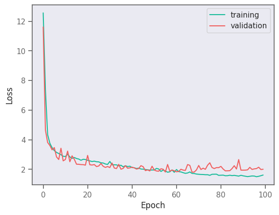
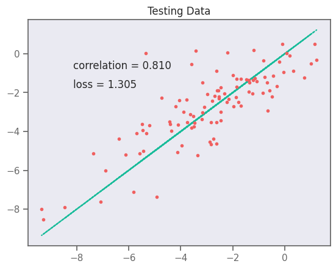
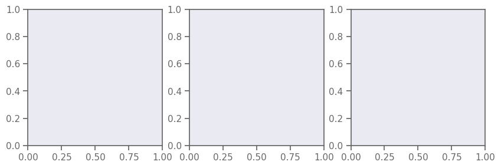

<!DOCTYPE html>
<html class="writer-html5" lang="en" >
<head>
  <meta charset="utf-8" /><meta name="generator" content="Docutils 0.17.1: http://docutils.sourceforge.net/" />

  <meta name="viewport" content="width=device-width, initial-scale=1.0" />
  <title>MMACE Paper: Recurrent Neural Network for Predicting Solubility &mdash; exmol  documentation</title>
      <link rel="stylesheet" href="../_static/pygments.css" type="text/css" />
      <link rel="stylesheet" href="../_static/css/theme.css" type="text/css" />
      <link rel="stylesheet" href="../_static/mystnb.4510f1fc1dee50b3e5859aac5469c37c29e427902b24a333a5f9fcb2f0b3ac41.css" type="text/css" />
  <!--[if lt IE 9]>
    <script src="../_static/js/html5shiv.min.js"></script>
  <![endif]-->
  
        <script data-url_root="../" id="documentation_options" src="../_static/documentation_options.js"></script>
        <script src="../_static/jquery.js"></script>
        <script src="../_static/underscore.js"></script>
        <script src="../_static/_sphinx_javascript_frameworks_compat.js"></script>
        <script src="../_static/doctools.js"></script>
        <script src="../_static/sphinx_highlight.js"></script>
    <script src="../_static/js/theme.js"></script>
    <link rel="index" title="Index" href="../genindex.html" />
    <link rel="search" title="Search" href="../search.html" />
    <link rel="next" title="LIME paper: Recurrent Neural Network for Solubility Prediciton" href="../paper2_LIME/Solubility-RNN.html" />
    <link rel="prev" title="MMACE Paper: Graph Neural Network for HIV Inhibition" href="GNN.html" /> 
</head>

<body class="wy-body-for-nav"> 
  <div class="wy-grid-for-nav">
    <nav data-toggle="wy-nav-shift" class="wy-nav-side">
      <div class="wy-side-scroll">
        <div class="wy-side-nav-search" >
            <a href="../toc.html" class="icon icon-home"> exmol
          </a>
<div role="search">
  <form id="rtd-search-form" class="wy-form" action="../search.html" method="get">
    <input type="text" name="q" placeholder="Search docs" />
    <input type="hidden" name="check_keywords" value="yes" />
    <input type="hidden" name="area" value="default" />
  </form>
</div>
        </div><div class="wy-menu wy-menu-vertical" data-spy="affix" role="navigation" aria-label="Navigation menu">
              <ul class="current">
<li class="toctree-l1"><a class="reference internal" href="../index.html">Getting Started</a></li>
<li class="toctree-l1"><a class="reference internal" href="../changelog.html">Change Log</a></li>
<li class="toctree-l1"><a class="reference internal" href="../api.html">API</a></li>
<li class="toctree-l1"><a class="reference internal" href="../paper2_LIME/Tutorial.html">Tutorial</a></li>
<li class="toctree-l1"><a class="reference internal" href="Schematic.html">MMACE Paper: Counterfactual Example</a></li>
<li class="toctree-l1"><a class="reference internal" href="RF.html">MMACE Paper: Random Forest for Blood-Brain Barrier</a></li>
<li class="toctree-l1"><a class="reference internal" href="GNN.html">MMACE Paper: Graph Neural Network for HIV Inhibition</a></li>
<li class="toctree-l1 current"><a class="current reference internal" href="#">MMACE Paper: Recurrent Neural Network for Predicting Solubility</a><ul>
<li class="toctree-l2"><a class="reference internal" href="#cf-explanation">CF explanation:</a></li>
<li class="toctree-l2"><a class="reference internal" href="#figure-showing-effect-of-mutation-number-and-alphabet">Figure showing effect of mutation number and Alphabet</a></li>
</ul>
</li>
<li class="toctree-l1"><a class="reference internal" href="../paper2_LIME/Solubility-RNN.html">LIME paper: Recurrent Neural Network for Solubility Prediciton</a></li>
<li class="toctree-l1"><a class="reference internal" href="../paper2_LIME/RF-lime.html">LIME paper: Random Forest for Solubility Prediciton</a></li>
</ul>

        </div>
      </div>
    </nav>

    <section data-toggle="wy-nav-shift" class="wy-nav-content-wrap"><nav class="wy-nav-top" aria-label="Mobile navigation menu" >
          <i data-toggle="wy-nav-top" class="fa fa-bars"></i>
          <a href="../toc.html">exmol</a>
      </nav>

      <div class="wy-nav-content">
        <div class="rst-content">
          <div role="navigation" aria-label="Page navigation">
  <ul class="wy-breadcrumbs">
      <li><a href="../toc.html" class="icon icon-home"></a></li>
      <li class="breadcrumb-item active">MMACE Paper: Recurrent Neural Network for Predicting Solubility</li>
      <li class="wy-breadcrumbs-aside">
              <a href="https://github.com/ur-whitelab/exmol/blob/main/docs/source/paper1_CFs/Solubility-RNN.ipynb" class="fa fa-github"> Edit on GitHub</a>
      </li>
  </ul>
  <hr/>
</div>
          <div role="main" class="document" itemscope="itemscope" itemtype="http://schema.org/Article">
           <div itemprop="articleBody">
             
  <section class="tex2jax_ignore mathjax_ignore" id="mmace-paper-recurrent-neural-network-for-predicting-solubility">
<h1>MMACE Paper: Recurrent Neural Network for Predicting Solubility<a class="headerlink" href="#mmace-paper-recurrent-neural-network-for-predicting-solubility" title="Permalink to this heading"></a></h1>
<div class="cell tag_hide-input docutils container">
<details class="hide above-input">
<summary aria-label="Toggle hidden content">
<span class="collapsed">Show code cell source</span>
<span class="expanded">Hide code cell source</span>
</summary>
<div class="cell_input docutils container">
<div class="highlight-ipython3 notranslate"><div class="highlight"><pre><span></span><span class="c1"># import os</span>
<span class="c1"># os.environ[&quot;CUDA_VISIBLE_DEVICES&quot;] = &quot;0&quot;</span>
<span class="kn">import</span> <span class="nn">pandas</span> <span class="k">as</span> <span class="nn">pd</span>
<span class="kn">import</span> <span class="nn">matplotlib.pyplot</span> <span class="k">as</span> <span class="nn">plt</span>
<span class="kn">import</span> <span class="nn">seaborn</span> <span class="k">as</span> <span class="nn">sns</span>
<span class="kn">import</span> <span class="nn">matplotlib</span> <span class="k">as</span> <span class="nn">mpl</span>
<span class="kn">import</span> <span class="nn">numpy</span> <span class="k">as</span> <span class="nn">np</span>
<span class="kn">import</span> <span class="nn">tensorflow</span> <span class="k">as</span> <span class="nn">tf</span>
<span class="kn">import</span> <span class="nn">selfies</span> <span class="k">as</span> <span class="nn">sf</span>
<span class="kn">import</span> <span class="nn">exmol</span>
<span class="kn">from</span> <span class="nn">dataclasses</span> <span class="kn">import</span> <span class="n">dataclass</span>
<span class="kn">from</span> <span class="nn">rdkit.Chem.Draw</span> <span class="kn">import</span> <span class="n">rdDepictor</span>

<span class="n">rdDepictor</span><span class="o">.</span><span class="n">SetPreferCoordGen</span><span class="p">(</span><span class="kc">True</span><span class="p">)</span>
<span class="n">sns</span><span class="o">.</span><span class="n">set_context</span><span class="p">(</span><span class="s2">&quot;notebook&quot;</span><span class="p">)</span>
<span class="n">sns</span><span class="o">.</span><span class="n">set_style</span><span class="p">(</span>
    <span class="s2">&quot;dark&quot;</span><span class="p">,</span>
    <span class="p">{</span>
        <span class="s2">&quot;xtick.bottom&quot;</span><span class="p">:</span> <span class="kc">True</span><span class="p">,</span>
        <span class="s2">&quot;ytick.left&quot;</span><span class="p">:</span> <span class="kc">True</span><span class="p">,</span>
        <span class="s2">&quot;xtick.color&quot;</span><span class="p">:</span> <span class="s2">&quot;#666666&quot;</span><span class="p">,</span>
        <span class="s2">&quot;ytick.color&quot;</span><span class="p">:</span> <span class="s2">&quot;#666666&quot;</span><span class="p">,</span>
        <span class="s2">&quot;axes.edgecolor&quot;</span><span class="p">:</span> <span class="s2">&quot;#666666&quot;</span><span class="p">,</span>
        <span class="s2">&quot;axes.linewidth&quot;</span><span class="p">:</span> <span class="mf">0.8</span><span class="p">,</span>
        <span class="s2">&quot;figure.dpi&quot;</span><span class="p">:</span> <span class="mi">300</span><span class="p">,</span>
    <span class="p">},</span>
<span class="p">)</span>
<span class="n">color_cycle</span> <span class="o">=</span> <span class="p">[</span><span class="s2">&quot;#1BBC9B&quot;</span><span class="p">,</span> <span class="s2">&quot;#F06060&quot;</span><span class="p">,</span> <span class="s2">&quot;#5C4B51&quot;</span><span class="p">,</span> <span class="s2">&quot;#F3B562&quot;</span><span class="p">,</span> <span class="s2">&quot;#6e5687&quot;</span><span class="p">]</span>
<span class="n">mpl</span><span class="o">.</span><span class="n">rcParams</span><span class="p">[</span><span class="s2">&quot;axes.prop_cycle&quot;</span><span class="p">]</span> <span class="o">=</span> <span class="n">mpl</span><span class="o">.</span><span class="n">cycler</span><span class="p">(</span><span class="n">color</span><span class="o">=</span><span class="n">color_cycle</span><span class="p">)</span>
<span class="n">soldata</span> <span class="o">=</span> <span class="n">pd</span><span class="o">.</span><span class="n">read_csv</span><span class="p">(</span>
    <span class="s2">&quot;https://github.com/whitead/dmol-book/raw/master/data/curated-solubility-dataset.csv&quot;</span>
<span class="p">)</span>
<span class="n">features_start_at</span> <span class="o">=</span> <span class="nb">list</span><span class="p">(</span><span class="n">soldata</span><span class="o">.</span><span class="n">columns</span><span class="p">)</span><span class="o">.</span><span class="n">index</span><span class="p">(</span><span class="s2">&quot;MolWt&quot;</span><span class="p">)</span>
<span class="n">np</span><span class="o">.</span><span class="n">random</span><span class="o">.</span><span class="n">seed</span><span class="p">(</span><span class="mi">0</span><span class="p">)</span>
</pre></div>
</div>
</div>
</details>
<div class="cell_output docutils container">
<div class="output stderr highlight-myst-ansi notranslate"><div class="highlight"><pre><span></span>2022-11-20 21:26:48.230231: I tensorflow/core/platform/cpu_feature_guard.cc:193] This TensorFlow binary is optimized with oneAPI Deep Neural Network Library (oneDNN) to use the following CPU instructions in performance-critical operations:  AVX2 AVX512F FMA
To enable them in other operations, rebuild TensorFlow with the appropriate compiler flags.
2022-11-20 21:26:48.383174: W tensorflow/compiler/xla/stream_executor/platform/default/dso_loader.cc:64] Could not load dynamic library &#39;libcudart.so.11.0&#39;; dlerror: libcudart.so.11.0: cannot open shared object file: No such file or directory; LD_LIBRARY_PATH: /opt/hostedtoolcache/Python/3.8.14/x64/lib
2022-11-20 21:26:48.383196: I tensorflow/compiler/xla/stream_executor/cuda/cudart_stub.cc:29] Ignore above cudart dlerror if you do not have a GPU set up on your machine.
</pre></div>
</div>
<div class="output stderr highlight-myst-ansi notranslate"><div class="highlight"><pre><span></span>2022-11-20 21:26:49.416949: W tensorflow/compiler/xla/stream_executor/platform/default/dso_loader.cc:64] Could not load dynamic library &#39;libnvinfer.so.7&#39;; dlerror: libnvinfer.so.7: cannot open shared object file: No such file or directory; LD_LIBRARY_PATH: /opt/hostedtoolcache/Python/3.8.14/x64/lib
2022-11-20 21:26:49.417059: W tensorflow/compiler/xla/stream_executor/platform/default/dso_loader.cc:64] Could not load dynamic library &#39;libnvinfer_plugin.so.7&#39;; dlerror: libnvinfer_plugin.so.7: cannot open shared object file: No such file or directory; LD_LIBRARY_PATH: /opt/hostedtoolcache/Python/3.8.14/x64/lib
2022-11-20 21:26:49.417068: W tensorflow/compiler/tf2tensorrt/utils/py_utils.cc:38] TF-TRT Warning: Cannot dlopen some TensorRT libraries. If you would like to use Nvidia GPU with TensorRT, please make sure the missing libraries mentioned above are installed properly.
</pre></div>
</div>
</div>
</div>
<div class="cell docutils container">
<div class="cell_input docutils container">
<div class="highlight-ipython3 notranslate"><div class="highlight"><pre><span></span><span class="c1"># REDUCED Data FOR CI</span>
<span class="n">soldata</span> <span class="o">=</span> <span class="n">soldata</span><span class="o">.</span><span class="n">sample</span><span class="p">(</span><span class="n">frac</span><span class="o">=</span><span class="mf">0.1</span><span class="p">,</span> <span class="n">random_state</span><span class="o">=</span><span class="mi">0</span><span class="p">)</span><span class="o">.</span><span class="n">reset_index</span><span class="p">(</span><span class="n">drop</span><span class="o">=</span><span class="kc">True</span><span class="p">)</span>
<span class="n">soldata</span><span class="o">.</span><span class="n">head</span><span class="p">()</span>
</pre></div>
</div>
</div>
<div class="cell_output docutils container">
<div class="output text_html"><div>
<style scoped>
    .dataframe tbody tr th:only-of-type {
        vertical-align: middle;
    }

    .dataframe tbody tr th {
        vertical-align: top;
    }

    .dataframe thead th {
        text-align: right;
    }
</style>
<table border="1" class="dataframe">
  <thead>
    <tr style="text-align: right;">
      <th></th>
      <th>ID</th>
      <th>Name</th>
      <th>InChI</th>
      <th>InChIKey</th>
      <th>SMILES</th>
      <th>Solubility</th>
      <th>SD</th>
      <th>Ocurrences</th>
      <th>Group</th>
      <th>MolWt</th>
      <th>...</th>
      <th>NumRotatableBonds</th>
      <th>NumValenceElectrons</th>
      <th>NumAromaticRings</th>
      <th>NumSaturatedRings</th>
      <th>NumAliphaticRings</th>
      <th>RingCount</th>
      <th>TPSA</th>
      <th>LabuteASA</th>
      <th>BalabanJ</th>
      <th>BertzCT</th>
    </tr>
  </thead>
  <tbody>
    <tr>
      <th>0</th>
      <td>B-4206</td>
      <td>diuron</td>
      <td>InChI=1S/C9H10Cl2N2O/c1-13(2)9(14)12-6-3-4-7(1...</td>
      <td>XMTQQYYKAHVGBJ-UHFFFAOYSA-N</td>
      <td>CN(C)C(=O)Nc1ccc(Cl)c(Cl)c1</td>
      <td>-3.744300</td>
      <td>1.227164</td>
      <td>5</td>
      <td>G4</td>
      <td>233.098</td>
      <td>...</td>
      <td>1.0</td>
      <td>76.0</td>
      <td>1.0</td>
      <td>0.0</td>
      <td>0.0</td>
      <td>1.0</td>
      <td>32.34</td>
      <td>92.603980</td>
      <td>2.781208</td>
      <td>352.665233</td>
    </tr>
    <tr>
      <th>1</th>
      <td>F-988</td>
      <td>7-(3-amino-3-methylazetidin-1-yl)-8-chloro-1-c...</td>
      <td>InChI=1S/C17H17ClFN3O3/c1-17(20)6-21(7-17)14-1...</td>
      <td>DUNZFXZSFJLIKR-UHFFFAOYSA-N</td>
      <td>CC1(N)CN(C2=C(Cl)C3=C(C=C2F)C(=O)C(C(=O)O)=CN3...</td>
      <td>-5.330000</td>
      <td>0.000000</td>
      <td>1</td>
      <td>G1</td>
      <td>365.792</td>
      <td>...</td>
      <td>3.0</td>
      <td>132.0</td>
      <td>2.0</td>
      <td>2.0</td>
      <td>2.0</td>
      <td>4.0</td>
      <td>88.56</td>
      <td>147.136366</td>
      <td>2.001398</td>
      <td>973.487509</td>
    </tr>
    <tr>
      <th>2</th>
      <td>C-1996</td>
      <td>4-acetoxybiphenyl;  4-biphenylyl  acetate</td>
      <td>InChI=1S/C14H12O2/c1-11(15)16-14-9-7-13(8-10-1...</td>
      <td>MISFQCBPASYYGV-UHFFFAOYSA-N</td>
      <td>CC(=O)OC1=CC=C(C=C1)C2=CC=CC=C2</td>
      <td>-4.400000</td>
      <td>0.000000</td>
      <td>1</td>
      <td>G1</td>
      <td>212.248</td>
      <td>...</td>
      <td>2.0</td>
      <td>80.0</td>
      <td>2.0</td>
      <td>0.0</td>
      <td>0.0</td>
      <td>2.0</td>
      <td>26.30</td>
      <td>94.493449</td>
      <td>2.228677</td>
      <td>471.848345</td>
    </tr>
    <tr>
      <th>3</th>
      <td>A-3055</td>
      <td>methane dimolybdenum</td>
      <td>InChI=1S/CH4.2Mo/h1H4;;</td>
      <td>JAGQSESDQXCFCH-UHFFFAOYSA-N</td>
      <td>C.[Mo].[Mo]</td>
      <td>-3.420275</td>
      <td>0.409223</td>
      <td>2</td>
      <td>G3</td>
      <td>207.923</td>
      <td>...</td>
      <td>0.0</td>
      <td>20.0</td>
      <td>0.0</td>
      <td>0.0</td>
      <td>0.0</td>
      <td>0.0</td>
      <td>0.00</td>
      <td>49.515427</td>
      <td>-0.000000</td>
      <td>2.754888</td>
    </tr>
    <tr>
      <th>4</th>
      <td>A-2575</td>
      <td>ethyl 4-[[(methylphenylamino)methylene]amino]b...</td>
      <td>InChI=1S/C17H18N2O2/c1-3-21-17(20)14-9-11-15(1...</td>
      <td>GNGYPJUKIKDJQT-UHFFFAOYSA-N</td>
      <td>CCOC(=O)c1ccc(cc1)N=CN(C)c2ccccc2</td>
      <td>-5.450777</td>
      <td>0.000000</td>
      <td>1</td>
      <td>G1</td>
      <td>282.343</td>
      <td>...</td>
      <td>5.0</td>
      <td>108.0</td>
      <td>2.0</td>
      <td>0.0</td>
      <td>0.0</td>
      <td>2.0</td>
      <td>41.90</td>
      <td>124.243431</td>
      <td>2.028889</td>
      <td>606.447052</td>
    </tr>
  </tbody>
</table>
<p>5 rows × 26 columns</p>
</div></div></div>
</div>
<div class="cell docutils container">
<div class="cell_input docutils container">
<div class="highlight-ipython3 notranslate"><div class="highlight"><pre><span></span><span class="n">selfies_list</span> <span class="o">=</span> <span class="p">[]</span>
<span class="k">for</span> <span class="n">s</span> <span class="ow">in</span> <span class="n">soldata</span><span class="o">.</span><span class="n">SMILES</span><span class="p">:</span>
    <span class="k">try</span><span class="p">:</span>
        <span class="n">selfies_list</span><span class="o">.</span><span class="n">append</span><span class="p">(</span><span class="n">sf</span><span class="o">.</span><span class="n">encoder</span><span class="p">(</span><span class="n">exmol</span><span class="o">.</span><span class="n">sanitize_smiles</span><span class="p">(</span><span class="n">s</span><span class="p">)[</span><span class="mi">1</span><span class="p">]))</span>
    <span class="k">except</span> <span class="n">sf</span><span class="o">.</span><span class="n">EncoderError</span><span class="p">:</span>
        <span class="n">selfies_list</span><span class="o">.</span><span class="n">append</span><span class="p">(</span><span class="kc">None</span><span class="p">)</span>
<span class="nb">len</span><span class="p">(</span><span class="n">selfies_list</span><span class="p">)</span>
</pre></div>
</div>
</div>
<div class="cell_output docutils container">
<div class="output text_plain highlight-myst-ansi notranslate"><div class="highlight"><pre><span></span>998
</pre></div>
</div>
</div>
</div>
<div class="cell docutils container">
<div class="cell_input docutils container">
<div class="highlight-ipython3 notranslate"><div class="highlight"><pre><span></span><span class="n">basic</span> <span class="o">=</span> <span class="nb">set</span><span class="p">(</span><span class="n">exmol</span><span class="o">.</span><span class="n">get_basic_alphabet</span><span class="p">())</span>
<span class="n">data_vocab</span> <span class="o">=</span> <span class="nb">set</span><span class="p">(</span>
    <span class="n">sf</span><span class="o">.</span><span class="n">get_alphabet_from_selfies</span><span class="p">([</span><span class="n">s</span> <span class="k">for</span> <span class="n">s</span> <span class="ow">in</span> <span class="n">selfies_list</span> <span class="k">if</span> <span class="n">s</span> <span class="ow">is</span> <span class="ow">not</span> <span class="kc">None</span><span class="p">])</span>
<span class="p">)</span>
<span class="n">vocab</span> <span class="o">=</span> <span class="p">[</span><span class="s2">&quot;[nop]&quot;</span><span class="p">]</span>
<span class="n">vocab</span><span class="o">.</span><span class="n">extend</span><span class="p">(</span><span class="nb">list</span><span class="p">(</span><span class="n">data_vocab</span><span class="o">.</span><span class="n">union</span><span class="p">(</span><span class="n">basic</span><span class="p">)))</span>
<span class="n">vocab_stoi</span> <span class="o">=</span> <span class="p">{</span><span class="n">o</span><span class="p">:</span> <span class="n">i</span> <span class="k">for</span> <span class="n">o</span><span class="p">,</span> <span class="n">i</span> <span class="ow">in</span> <span class="nb">zip</span><span class="p">(</span><span class="n">vocab</span><span class="p">,</span> <span class="nb">range</span><span class="p">(</span><span class="nb">len</span><span class="p">(</span><span class="n">vocab</span><span class="p">)))}</span>


<span class="k">def</span> <span class="nf">selfies2ints</span><span class="p">(</span><span class="n">s</span><span class="p">):</span>
    <span class="n">result</span> <span class="o">=</span> <span class="p">[]</span>
    <span class="k">for</span> <span class="n">token</span> <span class="ow">in</span> <span class="n">sf</span><span class="o">.</span><span class="n">split_selfies</span><span class="p">(</span><span class="n">s</span><span class="p">):</span>
        <span class="k">if</span> <span class="n">token</span> <span class="o">==</span> <span class="s2">&quot;.&quot;</span><span class="p">:</span>
            <span class="k">continue</span>  <span class="c1"># ?</span>
        <span class="k">if</span> <span class="n">token</span> <span class="ow">in</span> <span class="n">vocab_stoi</span><span class="p">:</span>
            <span class="n">result</span><span class="o">.</span><span class="n">append</span><span class="p">(</span><span class="n">vocab_stoi</span><span class="p">[</span><span class="n">token</span><span class="p">])</span>
        <span class="k">else</span><span class="p">:</span>
            <span class="n">result</span><span class="o">.</span><span class="n">append</span><span class="p">(</span><span class="n">np</span><span class="o">.</span><span class="n">nan</span><span class="p">)</span>
            <span class="c1"># print(&#39;Warning&#39;)</span>
    <span class="k">return</span> <span class="n">result</span>


<span class="k">def</span> <span class="nf">ints2selfies</span><span class="p">(</span><span class="n">v</span><span class="p">):</span>
    <span class="k">return</span> <span class="s2">&quot;&quot;</span><span class="o">.</span><span class="n">join</span><span class="p">([</span><span class="n">vocab</span><span class="p">[</span><span class="n">i</span><span class="p">]</span> <span class="k">for</span> <span class="n">i</span> <span class="ow">in</span> <span class="n">v</span><span class="p">])</span>


<span class="c1"># test them out</span>
<span class="n">s</span> <span class="o">=</span> <span class="n">selfies_list</span><span class="p">[</span><span class="mi">0</span><span class="p">]</span>
<span class="nb">print</span><span class="p">(</span><span class="s2">&quot;selfies:&quot;</span><span class="p">,</span> <span class="n">s</span><span class="p">)</span>
<span class="n">v</span> <span class="o">=</span> <span class="n">selfies2ints</span><span class="p">(</span><span class="n">s</span><span class="p">)</span>
<span class="nb">print</span><span class="p">(</span><span class="s2">&quot;selfies2ints:&quot;</span><span class="p">,</span> <span class="n">v</span><span class="p">)</span>
<span class="n">so</span> <span class="o">=</span> <span class="n">ints2selfies</span><span class="p">(</span><span class="n">v</span><span class="p">)</span>
<span class="nb">print</span><span class="p">(</span><span class="s2">&quot;ints2selfes:&quot;</span><span class="p">,</span> <span class="n">so</span><span class="p">)</span>
<span class="k">assert</span> <span class="n">so</span> <span class="o">==</span> <span class="n">s</span><span class="o">.</span><span class="n">replace</span><span class="p">(</span>
    <span class="s2">&quot;.&quot;</span><span class="p">,</span> <span class="s2">&quot;&quot;</span>
<span class="p">)</span>  <span class="c1"># make sure &#39;.&#39; is removed from Selfies string during assertion</span>
</pre></div>
</div>
</div>
<div class="cell_output docutils container">
<div class="output stream highlight-myst-ansi notranslate"><div class="highlight"><pre><span></span>selfies: [C][N][Branch1][C][C][C][=Branch1][C][=O][N][C][=C][C][=C][Branch1][C][Cl][C][Branch1][C][Cl][=C][Ring1][Branch2]
selfies2ints: [59, 44, 78, 59, 59, 59, 89, 59, 104, 44, 59, 28, 59, 28, 78, 59, 108, 59, 78, 59, 108, 28, 81, 84]
ints2selfes: [C][N][Branch1][C][C][C][=Branch1][C][=O][N][C][=C][C][=C][Branch1][C][Cl][C][Branch1][C][Cl][=C][Ring1][Branch2]
</pre></div>
</div>
</div>
</div>
<div class="cell docutils container">
<div class="cell_input docutils container">
<div class="highlight-ipython3 notranslate"><div class="highlight"><pre><span></span><span class="nd">@dataclass</span>
<span class="k">class</span> <span class="nc">Config</span><span class="p">:</span>
    <span class="n">vocab_size</span><span class="p">:</span> <span class="nb">int</span>
    <span class="n">example_number</span><span class="p">:</span> <span class="nb">int</span>
    <span class="n">batch_size</span><span class="p">:</span> <span class="nb">int</span>
    <span class="n">buffer_size</span><span class="p">:</span> <span class="nb">int</span>
    <span class="n">embedding_dim</span><span class="p">:</span> <span class="nb">int</span>
    <span class="n">rnn_units</span><span class="p">:</span> <span class="nb">int</span>
    <span class="n">hidden_dim</span><span class="p">:</span> <span class="nb">int</span>


<span class="n">config</span> <span class="o">=</span> <span class="n">Config</span><span class="p">(</span>
    <span class="n">vocab_size</span><span class="o">=</span><span class="nb">len</span><span class="p">(</span><span class="n">vocab</span><span class="p">),</span>
    <span class="n">example_number</span><span class="o">=</span><span class="nb">len</span><span class="p">(</span><span class="n">selfies_list</span><span class="p">),</span>
    <span class="n">batch_size</span><span class="o">=</span><span class="mi">16</span><span class="p">,</span>
    <span class="n">buffer_size</span><span class="o">=</span><span class="mi">10000</span><span class="p">,</span>
    <span class="n">embedding_dim</span><span class="o">=</span><span class="mi">256</span><span class="p">,</span>
    <span class="n">hidden_dim</span><span class="o">=</span><span class="mi">128</span><span class="p">,</span>
    <span class="n">rnn_units</span><span class="o">=</span><span class="mi">128</span><span class="p">,</span>
<span class="p">)</span>
</pre></div>
</div>
</div>
</div>
<div class="cell docutils container">
<div class="cell_input docutils container">
<div class="highlight-ipython3 notranslate"><div class="highlight"><pre><span></span><span class="c1"># now get sequences</span>
<span class="n">encoded</span> <span class="o">=</span> <span class="p">[</span><span class="n">selfies2ints</span><span class="p">(</span><span class="n">s</span><span class="p">)</span> <span class="k">for</span> <span class="n">s</span> <span class="ow">in</span> <span class="n">selfies_list</span> <span class="k">if</span> <span class="n">s</span> <span class="ow">is</span> <span class="ow">not</span> <span class="kc">None</span><span class="p">]</span>
<span class="n">padded_seqs</span> <span class="o">=</span> <span class="n">tf</span><span class="o">.</span><span class="n">keras</span><span class="o">.</span><span class="n">preprocessing</span><span class="o">.</span><span class="n">sequence</span><span class="o">.</span><span class="n">pad_sequences</span><span class="p">(</span><span class="n">encoded</span><span class="p">,</span> <span class="n">padding</span><span class="o">=</span><span class="s2">&quot;post&quot;</span><span class="p">)</span>

<span class="c1"># Now build dataset</span>
<span class="n">data</span> <span class="o">=</span> <span class="n">tf</span><span class="o">.</span><span class="n">data</span><span class="o">.</span><span class="n">Dataset</span><span class="o">.</span><span class="n">from_tensor_slices</span><span class="p">(</span>
    <span class="p">(</span><span class="n">padded_seqs</span><span class="p">,</span> <span class="n">soldata</span><span class="o">.</span><span class="n">Solubility</span><span class="o">.</span><span class="n">iloc</span><span class="p">[[</span><span class="nb">bool</span><span class="p">(</span><span class="n">s</span><span class="p">)</span> <span class="k">for</span> <span class="n">s</span> <span class="ow">in</span> <span class="n">selfies_list</span><span class="p">]]</span><span class="o">.</span><span class="n">values</span><span class="p">)</span>
<span class="p">)</span>
<span class="c1"># now split into val, test, train and batch</span>
<span class="n">N</span> <span class="o">=</span> <span class="nb">len</span><span class="p">(</span><span class="n">data</span><span class="p">)</span>
<span class="n">split</span> <span class="o">=</span> <span class="nb">int</span><span class="p">(</span><span class="mf">0.1</span> <span class="o">*</span> <span class="n">N</span><span class="p">)</span>
<span class="n">test_data</span> <span class="o">=</span> <span class="n">data</span><span class="o">.</span><span class="n">take</span><span class="p">(</span><span class="n">split</span><span class="p">)</span><span class="o">.</span><span class="n">batch</span><span class="p">(</span><span class="n">config</span><span class="o">.</span><span class="n">batch_size</span><span class="p">)</span>
<span class="n">nontest</span> <span class="o">=</span> <span class="n">data</span><span class="o">.</span><span class="n">skip</span><span class="p">(</span><span class="n">split</span><span class="p">)</span>
<span class="n">val_data</span><span class="p">,</span> <span class="n">train_data</span> <span class="o">=</span> <span class="n">nontest</span><span class="o">.</span><span class="n">take</span><span class="p">(</span><span class="n">split</span><span class="p">)</span><span class="o">.</span><span class="n">batch</span><span class="p">(</span><span class="n">config</span><span class="o">.</span><span class="n">batch_size</span><span class="p">),</span> <span class="n">nontest</span><span class="o">.</span><span class="n">skip</span><span class="p">(</span>
    <span class="n">split</span>
<span class="p">)</span><span class="o">.</span><span class="n">shuffle</span><span class="p">(</span><span class="n">config</span><span class="o">.</span><span class="n">buffer_size</span><span class="p">)</span><span class="o">.</span><span class="n">batch</span><span class="p">(</span><span class="n">config</span><span class="o">.</span><span class="n">batch_size</span><span class="p">)</span><span class="o">.</span><span class="n">prefetch</span><span class="p">(</span>
    <span class="n">tf</span><span class="o">.</span><span class="n">data</span><span class="o">.</span><span class="n">experimental</span><span class="o">.</span><span class="n">AUTOTUNE</span>
<span class="p">)</span>
</pre></div>
</div>
</div>
<div class="cell_output docutils container">
<div class="output stderr highlight-myst-ansi notranslate"><div class="highlight"><pre><span></span>2022-11-20 21:26:52.071799: W tensorflow/compiler/xla/stream_executor/platform/default/dso_loader.cc:64] Could not load dynamic library &#39;libcuda.so.1&#39;; dlerror: libcuda.so.1: cannot open shared object file: No such file or directory; LD_LIBRARY_PATH: /opt/hostedtoolcache/Python/3.8.14/x64/lib
2022-11-20 21:26:52.071835: W tensorflow/compiler/xla/stream_executor/cuda/cuda_driver.cc:265] failed call to cuInit: UNKNOWN ERROR (303)
2022-11-20 21:26:52.071854: I tensorflow/compiler/xla/stream_executor/cuda/cuda_diagnostics.cc:156] kernel driver does not appear to be running on this host (fv-az206-691): /proc/driver/nvidia/version does not exist
2022-11-20 21:26:52.072191: I tensorflow/core/platform/cpu_feature_guard.cc:193] This TensorFlow binary is optimized with oneAPI Deep Neural Network Library (oneDNN) to use the following CPU instructions in performance-critical operations:  AVX2 AVX512F FMA
To enable them in other operations, rebuild TensorFlow with the appropriate compiler flags.
</pre></div>
</div>
</div>
</div>
<div class="cell docutils container">
<div class="cell_input docutils container">
<div class="highlight-ipython3 notranslate"><div class="highlight"><pre><span></span><span class="n">model</span> <span class="o">=</span> <span class="n">tf</span><span class="o">.</span><span class="n">keras</span><span class="o">.</span><span class="n">Sequential</span><span class="p">()</span>

<span class="c1"># make embedding and indicate that 0 should be treated as padding mask</span>
<span class="n">model</span><span class="o">.</span><span class="n">add</span><span class="p">(</span>
    <span class="n">tf</span><span class="o">.</span><span class="n">keras</span><span class="o">.</span><span class="n">layers</span><span class="o">.</span><span class="n">Embedding</span><span class="p">(</span>
        <span class="n">input_dim</span><span class="o">=</span><span class="n">config</span><span class="o">.</span><span class="n">vocab_size</span><span class="p">,</span> <span class="n">output_dim</span><span class="o">=</span><span class="n">config</span><span class="o">.</span><span class="n">embedding_dim</span><span class="p">,</span> <span class="n">mask_zero</span><span class="o">=</span><span class="kc">True</span>
    <span class="p">)</span>
<span class="p">)</span>

<span class="c1"># RNN layer</span>
<span class="n">model</span><span class="o">.</span><span class="n">add</span><span class="p">(</span><span class="n">tf</span><span class="o">.</span><span class="n">keras</span><span class="o">.</span><span class="n">layers</span><span class="o">.</span><span class="n">GRU</span><span class="p">(</span><span class="n">config</span><span class="o">.</span><span class="n">rnn_units</span><span class="p">))</span>
<span class="c1"># a dense hidden layer</span>
<span class="n">model</span><span class="o">.</span><span class="n">add</span><span class="p">(</span><span class="n">tf</span><span class="o">.</span><span class="n">keras</span><span class="o">.</span><span class="n">layers</span><span class="o">.</span><span class="n">Dense</span><span class="p">(</span><span class="n">config</span><span class="o">.</span><span class="n">hidden_dim</span><span class="p">,</span> <span class="n">activation</span><span class="o">=</span><span class="s2">&quot;relu&quot;</span><span class="p">))</span>
<span class="c1"># regression, so no activation</span>
<span class="n">model</span><span class="o">.</span><span class="n">add</span><span class="p">(</span><span class="n">tf</span><span class="o">.</span><span class="n">keras</span><span class="o">.</span><span class="n">layers</span><span class="o">.</span><span class="n">Dense</span><span class="p">(</span><span class="mi">1</span><span class="p">))</span>

<span class="n">model</span><span class="o">.</span><span class="n">summary</span><span class="p">()</span>
</pre></div>
</div>
</div>
<div class="cell_output docutils container">
<div class="output stream highlight-myst-ansi notranslate"><div class="highlight"><pre><span></span>Model: &quot;sequential&quot;
</pre></div>
</div>
<div class="output stream highlight-myst-ansi notranslate"><div class="highlight"><pre><span></span>_________________________________________________________________
</pre></div>
</div>
<div class="output stream highlight-myst-ansi notranslate"><div class="highlight"><pre><span></span> Layer (type)                Output Shape              Param #   
</pre></div>
</div>
<div class="output stream highlight-myst-ansi notranslate"><div class="highlight"><pre><span></span>=================================================================
</pre></div>
</div>
<div class="output stream highlight-myst-ansi notranslate"><div class="highlight"><pre><span></span> embedding (Embedding)       (None, None, 256)         28160     
</pre></div>
</div>
<div class="output stream highlight-myst-ansi notranslate"><div class="highlight"><pre><span></span>                                                                 
</pre></div>
</div>
<div class="output stream highlight-myst-ansi notranslate"><div class="highlight"><pre><span></span> gru (GRU)                   (None, 128)               148224    
</pre></div>
</div>
<div class="output stream highlight-myst-ansi notranslate"><div class="highlight"><pre><span></span>                                                                 
</pre></div>
</div>
<div class="output stream highlight-myst-ansi notranslate"><div class="highlight"><pre><span></span> dense (Dense)               (None, 128)               16512     
</pre></div>
</div>
<div class="output stream highlight-myst-ansi notranslate"><div class="highlight"><pre><span></span>                                                                 
</pre></div>
</div>
<div class="output stream highlight-myst-ansi notranslate"><div class="highlight"><pre><span></span> dense_1 (Dense)             (None, 1)                 129       
</pre></div>
</div>
<div class="output stream highlight-myst-ansi notranslate"><div class="highlight"><pre><span></span>                                                                 
</pre></div>
</div>
<div class="output stream highlight-myst-ansi notranslate"><div class="highlight"><pre><span></span>=================================================================
</pre></div>
</div>
<div class="output stream highlight-myst-ansi notranslate"><div class="highlight"><pre><span></span>Total params: 193,025
</pre></div>
</div>
<div class="output stream highlight-myst-ansi notranslate"><div class="highlight"><pre><span></span>Trainable params: 193,025
</pre></div>
</div>
<div class="output stream highlight-myst-ansi notranslate"><div class="highlight"><pre><span></span>Non-trainable params: 0
</pre></div>
</div>
<div class="output stream highlight-myst-ansi notranslate"><div class="highlight"><pre><span></span>_________________________________________________________________
</pre></div>
</div>
</div>
</div>
<div class="cell docutils container">
<div class="cell_input docutils container">
<div class="highlight-ipython3 notranslate"><div class="highlight"><pre><span></span><span class="n">model</span><span class="o">.</span><span class="n">compile</span><span class="p">(</span><span class="n">tf</span><span class="o">.</span><span class="n">optimizers</span><span class="o">.</span><span class="n">Adam</span><span class="p">(</span><span class="mf">1e-4</span><span class="p">),</span> <span class="n">loss</span><span class="o">=</span><span class="s2">&quot;mean_squared_error&quot;</span><span class="p">)</span>
<span class="n">result</span> <span class="o">=</span> <span class="n">model</span><span class="o">.</span><span class="n">fit</span><span class="p">(</span><span class="n">train_data</span><span class="p">,</span> <span class="n">validation_data</span><span class="o">=</span><span class="n">val_data</span><span class="p">,</span> <span class="n">epochs</span><span class="o">=</span><span class="mi">100</span><span class="p">,</span> <span class="n">verbose</span><span class="o">=</span><span class="mi">0</span><span class="p">)</span>
</pre></div>
</div>
</div>
</div>
<div class="cell docutils container">
<div class="cell_input docutils container">
<div class="highlight-ipython3 notranslate"><div class="highlight"><pre><span></span><span class="n">plt</span><span class="o">.</span><span class="n">plot</span><span class="p">(</span><span class="n">result</span><span class="o">.</span><span class="n">history</span><span class="p">[</span><span class="s2">&quot;loss&quot;</span><span class="p">],</span> <span class="n">label</span><span class="o">=</span><span class="s2">&quot;training&quot;</span><span class="p">)</span>
<span class="n">plt</span><span class="o">.</span><span class="n">plot</span><span class="p">(</span><span class="n">result</span><span class="o">.</span><span class="n">history</span><span class="p">[</span><span class="s2">&quot;val_loss&quot;</span><span class="p">],</span> <span class="n">label</span><span class="o">=</span><span class="s2">&quot;validation&quot;</span><span class="p">)</span>
<span class="n">plt</span><span class="o">.</span><span class="n">legend</span><span class="p">()</span>
<span class="n">plt</span><span class="o">.</span><span class="n">xlabel</span><span class="p">(</span><span class="s2">&quot;Epoch&quot;</span><span class="p">)</span>
<span class="n">plt</span><span class="o">.</span><span class="n">ylabel</span><span class="p">(</span><span class="s2">&quot;Loss&quot;</span><span class="p">)</span>
<span class="n">plt</span><span class="o">.</span><span class="n">show</span><span class="p">()</span>
</pre></div>
</div>
</div>
<div class="cell_output docutils container">

</div>
</div>
<div class="cell docutils container">
<div class="cell_input docutils container">
<div class="highlight-ipython3 notranslate"><div class="highlight"><pre><span></span><span class="n">yhat</span> <span class="o">=</span> <span class="p">[]</span>
<span class="n">test_y</span> <span class="o">=</span> <span class="p">[]</span>
<span class="k">for</span> <span class="n">x</span><span class="p">,</span> <span class="n">y</span> <span class="ow">in</span> <span class="n">test_data</span><span class="p">:</span>
    <span class="n">yhat</span><span class="o">.</span><span class="n">extend</span><span class="p">(</span><span class="n">model</span><span class="p">(</span><span class="n">x</span><span class="p">)</span><span class="o">.</span><span class="n">numpy</span><span class="p">()</span><span class="o">.</span><span class="n">flatten</span><span class="p">())</span>
    <span class="n">test_y</span><span class="o">.</span><span class="n">extend</span><span class="p">(</span><span class="n">y</span><span class="o">.</span><span class="n">numpy</span><span class="p">()</span><span class="o">.</span><span class="n">flatten</span><span class="p">())</span>
<span class="n">yhat</span> <span class="o">=</span> <span class="n">np</span><span class="o">.</span><span class="n">array</span><span class="p">(</span><span class="n">yhat</span><span class="p">)</span>
<span class="n">test_y</span> <span class="o">=</span> <span class="n">np</span><span class="o">.</span><span class="n">array</span><span class="p">(</span><span class="n">test_y</span><span class="p">)</span>

<span class="c1"># plot test data</span>
<span class="n">plt</span><span class="o">.</span><span class="n">plot</span><span class="p">(</span><span class="n">test_y</span><span class="p">,</span> <span class="n">test_y</span><span class="p">,</span> <span class="s2">&quot;:&quot;</span><span class="p">)</span>
<span class="n">plt</span><span class="o">.</span><span class="n">plot</span><span class="p">(</span><span class="n">test_y</span><span class="p">,</span> <span class="n">yhat</span><span class="p">,</span> <span class="s2">&quot;.&quot;</span><span class="p">)</span>
<span class="n">plt</span><span class="o">.</span><span class="n">text</span><span class="p">(</span><span class="nb">min</span><span class="p">(</span><span class="n">y</span><span class="p">)</span> <span class="o">-</span> <span class="mi">7</span><span class="p">,</span> <span class="nb">max</span><span class="p">(</span><span class="n">y</span><span class="p">)</span> <span class="o">-</span> <span class="mi">2</span><span class="p">,</span> <span class="sa">f</span><span class="s2">&quot;correlation = </span><span class="si">{</span><span class="n">np</span><span class="o">.</span><span class="n">corrcoef</span><span class="p">(</span><span class="n">test_y</span><span class="p">,</span> <span class="n">yhat</span><span class="p">)[</span><span class="mi">0</span><span class="p">,</span><span class="mi">1</span><span class="p">]</span><span class="si">:</span><span class="s2">.3f</span><span class="si">}</span><span class="s2">&quot;</span><span class="p">)</span>
<span class="n">plt</span><span class="o">.</span><span class="n">text</span><span class="p">(</span><span class="nb">min</span><span class="p">(</span><span class="n">y</span><span class="p">)</span> <span class="o">-</span> <span class="mi">7</span><span class="p">,</span> <span class="nb">max</span><span class="p">(</span><span class="n">y</span><span class="p">)</span> <span class="o">-</span> <span class="mi">3</span><span class="p">,</span> <span class="sa">f</span><span class="s2">&quot;loss = </span><span class="si">{</span><span class="n">np</span><span class="o">.</span><span class="n">sqrt</span><span class="p">(</span><span class="n">np</span><span class="o">.</span><span class="n">mean</span><span class="p">((</span><span class="n">test_y</span> <span class="o">-</span> <span class="n">yhat</span><span class="p">)</span><span class="o">**</span><span class="mi">2</span><span class="p">))</span><span class="si">:</span><span class="s2">.3f</span><span class="si">}</span><span class="s2">&quot;</span><span class="p">)</span>
<span class="n">plt</span><span class="o">.</span><span class="n">title</span><span class="p">(</span><span class="s2">&quot;Testing Data&quot;</span><span class="p">)</span>
<span class="n">plt</span><span class="o">.</span><span class="n">savefig</span><span class="p">(</span><span class="s2">&quot;rnn-fit.png&quot;</span><span class="p">,</span> <span class="n">dpi</span><span class="o">=</span><span class="mi">300</span><span class="p">)</span>
<span class="n">plt</span><span class="o">.</span><span class="n">show</span><span class="p">()</span>
</pre></div>
</div>
</div>
<div class="cell_output docutils container">

</div>
</div>
<section id="cf-explanation">
<h2>CF explanation:<a class="headerlink" href="#cf-explanation" title="Permalink to this heading"></a></h2>
<p>In the following example let’s say we would like our molecules to return a solubility value of -3.5. Here we use MMACE algorithm to createcounter factual explanations. In other words, we would like to see what are the minimal mutations that could to be done to our input structure to get our desired solubility.</p>
<div class="cell docutils container">
<div class="cell_input docutils container">
<div class="highlight-ipython3 notranslate"><div class="highlight"><pre><span></span><span class="k">def</span> <span class="nf">predictor_function</span><span class="p">(</span><span class="n">smile_list</span><span class="p">,</span> <span class="n">selfies</span><span class="p">):</span>
    <span class="n">encoded</span> <span class="o">=</span> <span class="p">[</span><span class="n">selfies2ints</span><span class="p">(</span><span class="n">s</span><span class="p">)</span> <span class="k">for</span> <span class="n">s</span> <span class="ow">in</span> <span class="n">selfies</span><span class="p">]</span>
    <span class="c1"># check for nans</span>
    <span class="n">valid</span> <span class="o">=</span> <span class="p">[</span><span class="mf">1.0</span> <span class="k">if</span> <span class="nb">sum</span><span class="p">(</span><span class="n">e</span><span class="p">)</span> <span class="o">&gt;</span> <span class="mi">0</span> <span class="k">else</span> <span class="n">np</span><span class="o">.</span><span class="n">nan</span> <span class="k">for</span> <span class="n">e</span> <span class="ow">in</span> <span class="n">encoded</span><span class="p">]</span>
    <span class="n">encoded</span> <span class="o">=</span> <span class="p">[</span><span class="n">np</span><span class="o">.</span><span class="n">nan_to_num</span><span class="p">(</span><span class="n">e</span><span class="p">,</span> <span class="n">nan</span><span class="o">=</span><span class="mi">0</span><span class="p">)</span> <span class="k">for</span> <span class="n">e</span> <span class="ow">in</span> <span class="n">encoded</span><span class="p">]</span>
    <span class="n">padded_seqs</span> <span class="o">=</span> <span class="n">tf</span><span class="o">.</span><span class="n">keras</span><span class="o">.</span><span class="n">preprocessing</span><span class="o">.</span><span class="n">sequence</span><span class="o">.</span><span class="n">pad_sequences</span><span class="p">(</span><span class="n">encoded</span><span class="p">,</span> <span class="n">padding</span><span class="o">=</span><span class="s2">&quot;post&quot;</span><span class="p">)</span>
    <span class="n">labels</span> <span class="o">=</span> <span class="n">np</span><span class="o">.</span><span class="n">reshape</span><span class="p">(</span><span class="n">model</span><span class="o">.</span><span class="n">predict</span><span class="p">(</span><span class="n">padded_seqs</span><span class="p">),</span> <span class="p">(</span><span class="o">-</span><span class="mi">1</span><span class="p">))</span>
    <span class="k">return</span> <span class="n">labels</span> <span class="o">*</span> <span class="n">valid</span>
</pre></div>
</div>
</div>
</div>
<div class="cell docutils container">
<div class="cell_input docutils container">
<div class="highlight-ipython3 notranslate"><div class="highlight"><pre><span></span><span class="n">predictor_function</span><span class="p">([],</span> <span class="p">[</span><span class="s2">&quot;[C][C][O]&quot;</span><span class="p">,</span> <span class="s2">&quot;[C][C][Nop][O]&quot;</span><span class="p">])</span>
</pre></div>
</div>
</div>
<div class="cell_output docutils container">
<div class="output stream highlight-myst-ansi notranslate"><div class="highlight"><pre><span></span>1/1 [==============================] - ETA: 0s
</pre></div>
</div>
<div class="output stream highlight-myst-ansi notranslate"><div class="highlight"><pre><span></span>
1/1 [==============================] - 1s 1s/step
</pre></div>
</div>
<div class="output text_plain highlight-myst-ansi notranslate"><div class="highlight"><pre><span></span>array([0.25771007,        nan])
</pre></div>
</div>
</div>
</div>
<div class="cell docutils container">
<div class="cell_input docutils container">
<div class="highlight-ipython3 notranslate"><div class="highlight"><pre><span></span><span class="n">stoned_kwargs</span> <span class="o">=</span> <span class="p">{</span>
    <span class="s2">&quot;num_samples&quot;</span><span class="p">:</span> <span class="mi">2500</span><span class="p">,</span>
    <span class="s2">&quot;alphabet&quot;</span><span class="p">:</span> <span class="n">exmol</span><span class="o">.</span><span class="n">get_basic_alphabet</span><span class="p">(),</span>
    <span class="s2">&quot;max_mutations&quot;</span><span class="p">:</span> <span class="mi">2</span><span class="p">,</span>
<span class="p">}</span>
<span class="n">space</span> <span class="o">=</span> <span class="n">exmol</span><span class="o">.</span><span class="n">sample_space</span><span class="p">(</span>
    <span class="n">soldata</span><span class="o">.</span><span class="n">SMILES</span><span class="p">[</span><span class="mi">4</span><span class="p">],</span> <span class="n">predictor_function</span><span class="p">,</span> <span class="n">stoned_kwargs</span><span class="o">=</span><span class="n">stoned_kwargs</span><span class="p">,</span> <span class="n">quiet</span><span class="o">=</span><span class="kc">True</span>
<span class="p">)</span>
<span class="n">exps</span> <span class="o">=</span> <span class="n">exmol</span><span class="o">.</span><span class="n">rcf_explain</span><span class="p">(</span><span class="n">space</span><span class="p">,</span> <span class="mf">0.5</span><span class="p">,</span> <span class="n">nmols</span><span class="o">=</span><span class="mi">4</span><span class="p">)</span>
</pre></div>
</div>
</div>
<div class="cell_output docutils container">
<div class="output stream highlight-myst-ansi notranslate"><div class="highlight"><pre><span></span>1/1 [==============================] - ETA: 0s
</pre></div>
</div>
<div class="output stream highlight-myst-ansi notranslate"><div class="highlight"><pre><span></span>
1/1 [==============================] - 1s 1s/step
</pre></div>
</div>
<div class="output stream highlight-myst-ansi notranslate"><div class="highlight"><pre><span></span> 1/65 [..............................] - ETA: 1s
</pre></div>
</div>
<div class="output stream highlight-myst-ansi notranslate"><div class="highlight"><pre><span></span>
 7/65 [==&gt;...........................] - ETA: 0s
</pre></div>
</div>
<div class="output stream highlight-myst-ansi notranslate"><div class="highlight"><pre><span></span>
13/65 [=====&gt;........................] - ETA: 0s
</pre></div>
</div>
<div class="output stream highlight-myst-ansi notranslate"><div class="highlight"><pre><span></span>
19/65 [=======&gt;......................] - ETA: 0s
</pre></div>
</div>
<div class="output stream highlight-myst-ansi notranslate"><div class="highlight"><pre><span></span>
25/65 [==========&gt;...................] - ETA: 0s
</pre></div>
</div>
<div class="output stream highlight-myst-ansi notranslate"><div class="highlight"><pre><span></span>
31/65 [=============&gt;................] - ETA: 0s
</pre></div>
</div>
<div class="output stream highlight-myst-ansi notranslate"><div class="highlight"><pre><span></span>
37/65 [================&gt;.............] - ETA: 0s
</pre></div>
</div>
<div class="output stream highlight-myst-ansi notranslate"><div class="highlight"><pre><span></span>
43/65 [==================&gt;...........] - ETA: 0s
</pre></div>
</div>
<div class="output stream highlight-myst-ansi notranslate"><div class="highlight"><pre><span></span>
49/65 [=====================&gt;........] - ETA: 0s
</pre></div>
</div>
<div class="output stream highlight-myst-ansi notranslate"><div class="highlight"><pre><span></span>
55/65 [========================&gt;.....] - ETA: 0s
</pre></div>
</div>
<div class="output stream highlight-myst-ansi notranslate"><div class="highlight"><pre><span></span>
61/65 [===========================&gt;..] - ETA: 0s
</pre></div>
</div>
<div class="output stream highlight-myst-ansi notranslate"><div class="highlight"><pre><span></span>
65/65 [==============================] - 1s 10ms/step
</pre></div>
</div>
</div>
</div>
<div class="cell docutils container">
<div class="cell_input docutils container">
<div class="highlight-ipython3 notranslate"><div class="highlight"><pre><span></span><span class="n">fkw</span> <span class="o">=</span> <span class="p">{</span><span class="s2">&quot;figsize&quot;</span><span class="p">:</span> <span class="p">(</span><span class="mi">10</span><span class="p">,</span> <span class="mi">3</span><span class="p">)}</span>
<span class="n">exmol</span><span class="o">.</span><span class="n">plot_cf</span><span class="p">(</span><span class="n">exps</span><span class="p">,</span> <span class="n">figure_kwargs</span><span class="o">=</span><span class="n">fkw</span><span class="p">,</span> <span class="n">mol_size</span><span class="o">=</span><span class="p">(</span><span class="mi">450</span><span class="p">,</span> <span class="mi">400</span><span class="p">),</span> <span class="n">nrows</span><span class="o">=</span><span class="mi">1</span><span class="p">)</span>
<span class="n">plt</span><span class="o">.</span><span class="n">savefig</span><span class="p">(</span><span class="s2">&quot;rnn-simple.png&quot;</span><span class="p">,</span> <span class="n">bbox_inches</span><span class="o">=</span><span class="s2">&quot;tight&quot;</span><span class="p">,</span> <span class="n">dpi</span><span class="o">=</span><span class="mi">180</span><span class="p">)</span>
<span class="n">svg</span> <span class="o">=</span> <span class="n">exmol</span><span class="o">.</span><span class="n">insert_svg</span><span class="p">(</span><span class="n">exps</span><span class="p">,</span> <span class="n">mol_fontsize</span><span class="o">=</span><span class="mi">16</span><span class="p">)</span>
<span class="k">with</span> <span class="nb">open</span><span class="p">(</span><span class="s2">&quot;rnn-simple.svg&quot;</span><span class="p">,</span> <span class="s2">&quot;w&quot;</span><span class="p">)</span> <span class="k">as</span> <span class="n">f</span><span class="p">:</span>
    <span class="n">f</span><span class="o">.</span><span class="n">write</span><span class="p">(</span><span class="n">svg</span><span class="p">)</span>
</pre></div>
</div>
</div>
<div class="cell_output docutils container">
<div class="output traceback highlight-ipythontb notranslate"><div class="highlight"><pre><span></span><span class="gt">---------------------------------------------------------------------------</span>
<span class="ne">UnboundLocalError</span><span class="g g-Whitespace">                         </span>Traceback (most recent call last)
<span class="n">Cell</span> <span class="n">In</span> <span class="p">[</span><span class="mi">14</span><span class="p">],</span> <span class="n">line</span> <span class="mi">2</span>
<span class="g g-Whitespace">      </span><span class="mi">1</span> <span class="n">fkw</span> <span class="o">=</span> <span class="p">{</span><span class="s2">&quot;figsize&quot;</span><span class="p">:</span> <span class="p">(</span><span class="mi">10</span><span class="p">,</span> <span class="mi">3</span><span class="p">)}</span>
<span class="ne">----&gt; </span><span class="mi">2</span> <span class="n">exmol</span><span class="o">.</span><span class="n">plot_cf</span><span class="p">(</span><span class="n">exps</span><span class="p">,</span> <span class="n">figure_kwargs</span><span class="o">=</span><span class="n">fkw</span><span class="p">,</span> <span class="n">mol_size</span><span class="o">=</span><span class="p">(</span><span class="mi">450</span><span class="p">,</span> <span class="mi">400</span><span class="p">),</span> <span class="n">nrows</span><span class="o">=</span><span class="mi">1</span><span class="p">)</span>
<span class="g g-Whitespace">      </span><span class="mi">3</span> <span class="n">plt</span><span class="o">.</span><span class="n">savefig</span><span class="p">(</span><span class="s2">&quot;rnn-simple.png&quot;</span><span class="p">,</span> <span class="n">bbox_inches</span><span class="o">=</span><span class="s2">&quot;tight&quot;</span><span class="p">,</span> <span class="n">dpi</span><span class="o">=</span><span class="mi">180</span><span class="p">)</span>
<span class="g g-Whitespace">      </span><span class="mi">4</span> <span class="n">svg</span> <span class="o">=</span> <span class="n">exmol</span><span class="o">.</span><span class="n">insert_svg</span><span class="p">(</span><span class="n">exps</span><span class="p">,</span> <span class="n">mol_fontsize</span><span class="o">=</span><span class="mi">16</span><span class="p">)</span>

<span class="nn">File /opt/hostedtoolcache/Python/3.8.14/x64/lib/python3.8/site-packages/exmol/exmol.py:980,</span> in <span class="ni">plot_cf</span><span class="nt">(exps, fig, figure_kwargs, mol_size, mol_fontsize, nrows, ncols)</span>
<span class="g g-Whitespace">    </span><span class="mi">978</span> <span class="k">else</span><span class="p">:</span>
<span class="g g-Whitespace">    </span><span class="mi">979</span>     <span class="n">axs</span> <span class="o">=</span> <span class="n">fig</span><span class="o">.</span><span class="n">subplots</span><span class="p">(</span><span class="n">R</span><span class="p">,</span> <span class="n">C</span><span class="p">)</span>
<span class="ne">--&gt; </span><span class="mi">980</span> <span class="k">if</span> <span class="nb">type</span><span class="p">(</span><span class="n">axes</span><span class="p">)</span> <span class="o">!=</span> <span class="n">np</span><span class="o">.</span><span class="n">ndarray</span><span class="p">:</span>  <span class="c1"># Happens if nrows=ncols=1</span>
<span class="g g-Whitespace">    </span><span class="mi">981</span>     <span class="n">axes</span> <span class="o">=</span> <span class="n">np</span><span class="o">.</span><span class="n">array</span><span class="p">([[</span><span class="n">axes</span><span class="p">]])</span>
<span class="g g-Whitespace">    </span><span class="mi">982</span> <span class="n">axs</span> <span class="o">=</span> <span class="n">axs</span><span class="o">.</span><span class="n">flatten</span><span class="p">()</span>

<span class="ne">UnboundLocalError</span>: local variable &#39;axes&#39; referenced before assignment
</pre></div>
</div>

</div>
</div>
<div class="cell docutils container">
<div class="cell_input docutils container">
<div class="highlight-ipython3 notranslate"><div class="highlight"><pre><span></span><span class="n">fkw</span> <span class="o">=</span> <span class="p">{</span><span class="s2">&quot;figsize&quot;</span><span class="p">:</span> <span class="p">(</span><span class="mi">10</span><span class="p">,</span> <span class="mi">4</span><span class="p">)}</span>
<span class="n">font</span> <span class="o">=</span> <span class="p">{</span><span class="s2">&quot;family&quot;</span><span class="p">:</span> <span class="s2">&quot;normal&quot;</span><span class="p">,</span> <span class="s2">&quot;weight&quot;</span><span class="p">:</span> <span class="s2">&quot;normal&quot;</span><span class="p">,</span> <span class="s2">&quot;size&quot;</span><span class="p">:</span> <span class="mi">22</span><span class="p">}</span>

<span class="n">exmol</span><span class="o">.</span><span class="n">plot_space</span><span class="p">(</span><span class="n">space</span><span class="p">,</span> <span class="n">exps</span><span class="p">,</span> <span class="n">figure_kwargs</span><span class="o">=</span><span class="n">fkw</span><span class="p">,</span> <span class="n">mol_size</span><span class="o">=</span><span class="p">(</span><span class="mi">100</span><span class="p">,</span> <span class="mi">100</span><span class="p">),</span> <span class="n">offset</span><span class="o">=</span><span class="mi">1</span><span class="p">)</span>
<span class="n">ax</span> <span class="o">=</span> <span class="n">plt</span><span class="o">.</span><span class="n">gca</span><span class="p">()</span>
<span class="n">plt</span><span class="o">.</span><span class="n">colorbar</span><span class="p">(</span>
    <span class="n">ax</span><span class="o">.</span><span class="n">get_children</span><span class="p">()[</span><span class="mi">1</span><span class="p">],</span>
    <span class="n">ax</span><span class="o">=</span><span class="p">[</span><span class="n">ax</span><span class="p">],</span>
    <span class="n">label</span><span class="o">=</span><span class="s2">&quot;Solubility [Log M]&quot;</span><span class="p">,</span>
    <span class="n">location</span><span class="o">=</span><span class="s2">&quot;left&quot;</span><span class="p">,</span>
    <span class="n">shrink</span><span class="o">=</span><span class="mf">0.8</span><span class="p">,</span>
<span class="p">)</span>
<span class="n">plt</span><span class="o">.</span><span class="n">savefig</span><span class="p">(</span><span class="s2">&quot;rnn-space.png&quot;</span><span class="p">,</span> <span class="n">bbox_inches</span><span class="o">=</span><span class="s2">&quot;tight&quot;</span><span class="p">,</span> <span class="n">dpi</span><span class="o">=</span><span class="mi">180</span><span class="p">)</span>
<span class="n">svg</span> <span class="o">=</span> <span class="n">exmol</span><span class="o">.</span><span class="n">insert_svg</span><span class="p">(</span><span class="n">exps</span><span class="p">,</span> <span class="n">mol_fontsize</span><span class="o">=</span><span class="mi">16</span><span class="p">)</span>
<span class="k">with</span> <span class="nb">open</span><span class="p">(</span><span class="s2">&quot;svg_figs/rnn-space.svg&quot;</span><span class="p">,</span> <span class="s2">&quot;w&quot;</span><span class="p">)</span> <span class="k">as</span> <span class="n">f</span><span class="p">:</span>
    <span class="n">f</span><span class="o">.</span><span class="n">write</span><span class="p">(</span><span class="n">svg</span><span class="p">)</span>
</pre></div>
</div>
</div>
</div>
<div class="cell docutils container">
<div class="cell_input docutils container">
<div class="highlight-ipython3 notranslate"><div class="highlight"><pre><span></span><span class="n">space</span> <span class="o">=</span> <span class="n">exmol</span><span class="o">.</span><span class="n">sample_space</span><span class="p">(</span>
    <span class="n">soldata</span><span class="o">.</span><span class="n">SMILES</span><span class="p">[</span><span class="mi">4</span><span class="p">],</span> <span class="n">predictor_function</span><span class="p">,</span> <span class="n">preset</span><span class="o">=</span><span class="s2">&quot;wide&quot;</span><span class="p">,</span> <span class="n">quiet</span><span class="o">=</span><span class="kc">True</span>
<span class="p">)</span>
<span class="n">exps</span> <span class="o">=</span> <span class="n">exmol</span><span class="o">.</span><span class="n">rcf_explain</span><span class="p">(</span><span class="n">space</span><span class="p">,</span> <span class="mf">0.5</span><span class="p">)</span>
</pre></div>
</div>
</div>
</div>
<div class="cell docutils container">
<div class="cell_input docutils container">
<div class="highlight-ipython3 notranslate"><div class="highlight"><pre><span></span><span class="n">fkw</span> <span class="o">=</span> <span class="p">{</span><span class="s2">&quot;figsize&quot;</span><span class="p">:</span> <span class="p">(</span><span class="mi">8</span><span class="p">,</span> <span class="mi">6</span><span class="p">)}</span>
<span class="n">font</span> <span class="o">=</span> <span class="p">{</span><span class="s2">&quot;family&quot;</span><span class="p">:</span> <span class="s2">&quot;normal&quot;</span><span class="p">,</span> <span class="s2">&quot;weight&quot;</span><span class="p">:</span> <span class="s2">&quot;normal&quot;</span><span class="p">,</span> <span class="s2">&quot;size&quot;</span><span class="p">:</span> <span class="mi">22</span><span class="p">}</span>


<span class="n">exmol</span><span class="o">.</span><span class="n">plot_space</span><span class="p">(</span><span class="n">space</span><span class="p">,</span> <span class="n">exps</span><span class="p">,</span> <span class="n">figure_kwargs</span><span class="o">=</span><span class="n">fkw</span><span class="p">,</span> <span class="n">mol_size</span><span class="o">=</span><span class="p">(</span><span class="mi">200</span><span class="p">,</span> <span class="mi">200</span><span class="p">),</span> <span class="n">offset</span><span class="o">=</span><span class="mi">1</span><span class="p">)</span>
<span class="n">ax</span> <span class="o">=</span> <span class="n">plt</span><span class="o">.</span><span class="n">gca</span><span class="p">()</span>
<span class="n">plt</span><span class="o">.</span><span class="n">colorbar</span><span class="p">(</span><span class="n">ax</span><span class="o">.</span><span class="n">get_children</span><span class="p">()[</span><span class="mi">1</span><span class="p">],</span> <span class="n">ax</span><span class="o">=</span><span class="p">[</span><span class="n">ax</span><span class="p">],</span> <span class="n">location</span><span class="o">=</span><span class="s2">&quot;left&quot;</span><span class="p">,</span> <span class="n">label</span><span class="o">=</span><span class="s2">&quot;Solubility [Log M]&quot;</span><span class="p">)</span>
<span class="n">plt</span><span class="o">.</span><span class="n">savefig</span><span class="p">(</span><span class="s2">&quot;rnn-wide.png&quot;</span><span class="p">,</span> <span class="n">bbox_inches</span><span class="o">=</span><span class="s2">&quot;tight&quot;</span><span class="p">,</span> <span class="n">dpi</span><span class="o">=</span><span class="mi">180</span><span class="p">)</span>
<span class="n">svg</span> <span class="o">=</span> <span class="n">exmol</span><span class="o">.</span><span class="n">insert_svg</span><span class="p">(</span><span class="n">exps</span><span class="p">,</span> <span class="n">mol_fontsize</span><span class="o">=</span><span class="mi">16</span><span class="p">)</span>
<span class="k">with</span> <span class="nb">open</span><span class="p">(</span><span class="s2">&quot;rnn-space-wide.svg&quot;</span><span class="p">,</span> <span class="s2">&quot;w&quot;</span><span class="p">)</span> <span class="k">as</span> <span class="n">f</span><span class="p">:</span>
    <span class="n">f</span><span class="o">.</span><span class="n">write</span><span class="p">(</span><span class="n">svg</span><span class="p">)</span>
</pre></div>
</div>
</div>
</div>
</section>
<section id="figure-showing-effect-of-mutation-number-and-alphabet">
<h2>Figure showing effect of mutation number and Alphabet<a class="headerlink" href="#figure-showing-effect-of-mutation-number-and-alphabet" title="Permalink to this heading"></a></h2>
<div class="cell docutils container">
<div class="cell_input docutils container">
<div class="highlight-ipython3 notranslate"><div class="highlight"><pre><span></span><span class="n">exps</span> <span class="o">=</span> <span class="p">[]</span>
<span class="n">spaces</span> <span class="o">=</span> <span class="p">[]</span>
<span class="k">for</span> <span class="n">i</span> <span class="ow">in</span> <span class="p">[</span><span class="mi">1</span><span class="p">,</span> <span class="mi">3</span><span class="p">,</span> <span class="mi">5</span><span class="p">]:</span>
    <span class="n">stoned_kwargs</span> <span class="o">=</span> <span class="p">{</span>
        <span class="s2">&quot;num_samples&quot;</span><span class="p">:</span> <span class="mi">2500</span><span class="p">,</span>
        <span class="s2">&quot;alphabet&quot;</span><span class="p">:</span> <span class="n">exmol</span><span class="o">.</span><span class="n">get_basic_alphabet</span><span class="p">(),</span>
        <span class="s2">&quot;min_mutations&quot;</span><span class="p">:</span> <span class="n">i</span><span class="p">,</span>
        <span class="s2">&quot;max_mutations&quot;</span><span class="p">:</span> <span class="n">i</span><span class="p">,</span>
    <span class="p">}</span>
    <span class="n">space</span> <span class="o">=</span> <span class="n">exmol</span><span class="o">.</span><span class="n">sample_space</span><span class="p">(</span>
        <span class="n">soldata</span><span class="o">.</span><span class="n">SMILES</span><span class="p">[</span><span class="mi">4</span><span class="p">],</span> <span class="n">predictor_function</span><span class="p">,</span> <span class="n">stoned_kwargs</span><span class="o">=</span><span class="n">stoned_kwargs</span><span class="p">,</span> <span class="n">quiet</span><span class="o">=</span><span class="kc">True</span>
    <span class="p">)</span>
    <span class="n">spaces</span><span class="o">.</span><span class="n">append</span><span class="p">(</span><span class="n">space</span><span class="p">)</span>
    <span class="n">e</span> <span class="o">=</span> <span class="n">exmol</span><span class="o">.</span><span class="n">rcf_explain</span><span class="p">(</span><span class="n">space</span><span class="p">,</span> <span class="n">nmols</span><span class="o">=</span><span class="mi">2</span><span class="p">)</span>
    <span class="k">if</span> <span class="nb">len</span><span class="p">(</span><span class="n">exps</span><span class="p">)</span> <span class="o">==</span> <span class="mi">0</span><span class="p">:</span>
        <span class="n">exps</span><span class="o">.</span><span class="n">append</span><span class="p">(</span><span class="n">e</span><span class="p">[</span><span class="mi">0</span><span class="p">])</span>
    <span class="k">for</span> <span class="n">ei</span> <span class="ow">in</span> <span class="n">e</span><span class="p">:</span>
        <span class="k">if</span> <span class="ow">not</span> <span class="n">ei</span><span class="o">.</span><span class="n">is_origin</span> <span class="ow">and</span> <span class="s2">&quot;Decrease&quot;</span> <span class="ow">in</span> <span class="n">ei</span><span class="o">.</span><span class="n">label</span><span class="p">:</span>
            <span class="n">ei</span><span class="o">.</span><span class="n">label</span> <span class="o">=</span> <span class="sa">f</span><span class="s2">&quot;Mutations = </span><span class="si">{</span><span class="n">i</span><span class="si">}</span><span class="s2">&quot;</span>
            <span class="n">exps</span><span class="o">.</span><span class="n">append</span><span class="p">(</span><span class="n">ei</span><span class="p">)</span>
            <span class="k">break</span>
</pre></div>
</div>
</div>
</div>
<div class="cell docutils container">
<div class="cell_input docutils container">
<div class="highlight-ipython3 notranslate"><div class="highlight"><pre><span></span><span class="n">fkw</span> <span class="o">=</span> <span class="p">{</span><span class="s2">&quot;figsize&quot;</span><span class="p">:</span> <span class="p">(</span><span class="mi">10</span><span class="p">,</span> <span class="mi">4</span><span class="p">)}</span>
<span class="n">exmol</span><span class="o">.</span><span class="n">plot_cf</span><span class="p">(</span><span class="n">exps</span><span class="p">,</span> <span class="n">figure_kwargs</span><span class="o">=</span><span class="n">fkw</span><span class="p">,</span> <span class="n">mol_fontsize</span><span class="o">=</span><span class="mi">26</span><span class="p">,</span> <span class="n">mol_size</span><span class="o">=</span><span class="p">(</span><span class="mi">400</span><span class="p">,</span> <span class="mi">400</span><span class="p">),</span> <span class="n">nrows</span><span class="o">=</span><span class="mi">1</span><span class="p">)</span>
<span class="n">plt</span><span class="o">.</span><span class="n">savefig</span><span class="p">(</span><span class="s2">&quot;rnn-mutations.png&quot;</span><span class="p">,</span> <span class="n">bbox_inches</span><span class="o">=</span><span class="s2">&quot;tight&quot;</span><span class="p">,</span> <span class="n">dpi</span><span class="o">=</span><span class="mi">180</span><span class="p">)</span>
<span class="n">svg</span> <span class="o">=</span> <span class="n">exmol</span><span class="o">.</span><span class="n">insert_svg</span><span class="p">(</span><span class="n">exps</span><span class="p">,</span> <span class="n">mol_fontsize</span><span class="o">=</span><span class="mi">16</span><span class="p">)</span>
<span class="k">with</span> <span class="nb">open</span><span class="p">(</span><span class="s2">&quot;rnn-mutations.svg&quot;</span><span class="p">,</span> <span class="s2">&quot;w&quot;</span><span class="p">)</span> <span class="k">as</span> <span class="n">f</span><span class="p">:</span>
    <span class="n">f</span><span class="o">.</span><span class="n">write</span><span class="p">(</span><span class="n">svg</span><span class="p">)</span>
</pre></div>
</div>
</div>
</div>
<div class="cell docutils container">
<div class="cell_input docutils container">
<div class="highlight-ipython3 notranslate"><div class="highlight"><pre><span></span><span class="n">fig</span><span class="p">,</span> <span class="n">axs</span> <span class="o">=</span> <span class="n">plt</span><span class="o">.</span><span class="n">subplots</span><span class="p">(</span><span class="mi">1</span><span class="p">,</span> <span class="mi">3</span><span class="p">,</span> <span class="n">figsize</span><span class="o">=</span><span class="p">(</span><span class="mi">8</span><span class="p">,</span> <span class="mi">3</span><span class="p">),</span> <span class="n">dpi</span><span class="o">=</span><span class="mi">180</span><span class="p">,</span> <span class="n">squeeze</span><span class="o">=</span><span class="kc">True</span><span class="p">,</span> <span class="n">sharey</span><span class="o">=</span><span class="kc">True</span><span class="p">)</span>
<span class="k">for</span> <span class="n">i</span><span class="p">,</span> <span class="n">n</span> <span class="ow">in</span> <span class="nb">enumerate</span><span class="p">([</span><span class="mi">1</span><span class="p">,</span> <span class="mi">3</span><span class="p">,</span> <span class="mi">5</span><span class="p">]):</span>
    <span class="n">axs</span><span class="p">[</span><span class="n">i</span><span class="p">]</span><span class="o">.</span><span class="n">hist</span><span class="p">([</span><span class="n">e</span><span class="o">.</span><span class="n">similarity</span> <span class="k">for</span> <span class="n">e</span> <span class="ow">in</span> <span class="n">spaces</span><span class="p">[</span><span class="n">i</span><span class="p">][</span><span class="mi">1</span><span class="p">:]],</span> <span class="n">bins</span><span class="o">=</span><span class="mi">99</span><span class="p">,</span> <span class="n">edgecolor</span><span class="o">=</span><span class="s2">&quot;none&quot;</span><span class="p">)</span>
    <span class="n">axs</span><span class="p">[</span><span class="n">i</span><span class="p">]</span><span class="o">.</span><span class="n">set_title</span><span class="p">(</span><span class="sa">f</span><span class="s2">&quot;Mutations = </span><span class="si">{</span><span class="n">n</span><span class="si">}</span><span class="s2">&quot;</span><span class="p">)</span>
    <span class="n">axs</span><span class="p">[</span><span class="n">i</span><span class="p">]</span><span class="o">.</span><span class="n">set_xlim</span><span class="p">(</span><span class="mi">0</span><span class="p">,</span> <span class="mi">1</span><span class="p">)</span>
<span class="n">plt</span><span class="o">.</span><span class="n">tight_layout</span><span class="p">()</span>
<span class="n">plt</span><span class="o">.</span><span class="n">savefig</span><span class="p">(</span><span class="s2">&quot;rnn-mutation-hist.png&quot;</span><span class="p">,</span> <span class="n">bbox_inches</span><span class="o">=</span><span class="s2">&quot;tight&quot;</span><span class="p">,</span> <span class="n">dpi</span><span class="o">=</span><span class="mi">180</span><span class="p">)</span>
</pre></div>
</div>
</div>
</div>
<div class="cell docutils container">
<div class="cell_input docutils container">
<div class="highlight-ipython3 notranslate"><div class="highlight"><pre><span></span><span class="n">basic</span> <span class="o">=</span> <span class="n">exmol</span><span class="o">.</span><span class="n">get_basic_alphabet</span><span class="p">()</span>
<span class="n">train</span> <span class="o">=</span> <span class="n">sf</span><span class="o">.</span><span class="n">get_alphabet_from_selfies</span><span class="p">([</span><span class="n">s</span> <span class="k">for</span> <span class="n">s</span> <span class="ow">in</span> <span class="n">selfies_list</span> <span class="k">if</span> <span class="n">s</span> <span class="ow">is</span> <span class="ow">not</span> <span class="kc">None</span><span class="p">])</span>
<span class="n">wide</span> <span class="o">=</span> <span class="n">sf</span><span class="o">.</span><span class="n">get_semantic_robust_alphabet</span><span class="p">()</span>

<span class="n">alphs</span> <span class="o">=</span> <span class="p">{</span><span class="s2">&quot;Basic&quot;</span><span class="p">:</span> <span class="n">basic</span><span class="p">,</span> <span class="s2">&quot;Training Data&quot;</span><span class="p">:</span> <span class="n">train</span><span class="p">,</span> <span class="s2">&quot;SELFIES&quot;</span><span class="p">:</span> <span class="n">wide</span><span class="p">}</span>

<span class="n">exps</span> <span class="o">=</span> <span class="p">[]</span>
<span class="k">for</span> <span class="n">l</span><span class="p">,</span> <span class="n">a</span> <span class="ow">in</span> <span class="n">alphs</span><span class="o">.</span><span class="n">items</span><span class="p">():</span>
    <span class="n">stoned_kwargs</span> <span class="o">=</span> <span class="p">{</span><span class="s2">&quot;num_samples&quot;</span><span class="p">:</span> <span class="mi">2500</span> <span class="o">//</span> <span class="mi">2</span><span class="p">,</span> <span class="s2">&quot;alphabet&quot;</span><span class="p">:</span> <span class="n">a</span><span class="p">,</span> <span class="s2">&quot;max_mutations&quot;</span><span class="p">:</span> <span class="mi">2</span><span class="p">}</span>
    <span class="n">space</span> <span class="o">=</span> <span class="n">exmol</span><span class="o">.</span><span class="n">sample_space</span><span class="p">(</span>
        <span class="n">soldata</span><span class="o">.</span><span class="n">SMILES</span><span class="p">[</span><span class="mi">4</span><span class="p">],</span> <span class="n">predictor_function</span><span class="p">,</span> <span class="n">stoned_kwargs</span><span class="o">=</span><span class="n">stoned_kwargs</span><span class="p">,</span> <span class="n">quiet</span><span class="o">=</span><span class="kc">True</span>
    <span class="p">)</span>
    <span class="n">e</span> <span class="o">=</span> <span class="n">exmol</span><span class="o">.</span><span class="n">rcf_explain</span><span class="p">(</span><span class="n">space</span><span class="p">,</span> <span class="n">nmols</span><span class="o">=</span><span class="mi">2</span><span class="p">)</span>
    <span class="k">if</span> <span class="nb">len</span><span class="p">(</span><span class="n">exps</span><span class="p">)</span> <span class="o">==</span> <span class="mi">0</span><span class="p">:</span>
        <span class="n">exps</span><span class="o">.</span><span class="n">append</span><span class="p">(</span><span class="n">e</span><span class="p">[</span><span class="mi">0</span><span class="p">])</span>
    <span class="k">for</span> <span class="n">ei</span> <span class="ow">in</span> <span class="n">e</span><span class="p">:</span>
        <span class="k">if</span> <span class="ow">not</span> <span class="n">ei</span><span class="o">.</span><span class="n">is_origin</span> <span class="ow">and</span> <span class="s2">&quot;Decrease&quot;</span> <span class="ow">in</span> <span class="n">ei</span><span class="o">.</span><span class="n">label</span><span class="p">:</span>
            <span class="n">ei</span><span class="o">.</span><span class="n">label</span> <span class="o">=</span> <span class="sa">f</span><span class="s2">&quot;Alphabet = </span><span class="si">{</span><span class="n">l</span><span class="si">}</span><span class="s2">&quot;</span>
            <span class="n">exps</span><span class="o">.</span><span class="n">append</span><span class="p">(</span><span class="n">ei</span><span class="p">)</span>
            <span class="k">break</span>
</pre></div>
</div>
</div>
</div>
<div class="cell docutils container">
<div class="cell_input docutils container">
<div class="highlight-ipython3 notranslate"><div class="highlight"><pre><span></span><span class="n">fkw</span> <span class="o">=</span> <span class="p">{</span><span class="s2">&quot;figsize&quot;</span><span class="p">:</span> <span class="p">(</span><span class="mi">10</span><span class="p">,</span> <span class="mi">4</span><span class="p">)}</span>
<span class="n">exmol</span><span class="o">.</span><span class="n">plot_cf</span><span class="p">(</span><span class="n">exps</span><span class="p">,</span> <span class="n">figure_kwargs</span><span class="o">=</span><span class="n">fkw</span><span class="p">,</span> <span class="n">mol_fontsize</span><span class="o">=</span><span class="mi">26</span><span class="p">,</span> <span class="n">mol_size</span><span class="o">=</span><span class="p">(</span><span class="mi">400</span><span class="p">,</span> <span class="mi">400</span><span class="p">),</span> <span class="n">nrows</span><span class="o">=</span><span class="mi">1</span><span class="p">)</span>
<span class="n">plt</span><span class="o">.</span><span class="n">savefig</span><span class="p">(</span><span class="s2">&quot;rnn-alphabets.png&quot;</span><span class="p">,</span> <span class="n">bbox_inches</span><span class="o">=</span><span class="s2">&quot;tight&quot;</span><span class="p">,</span> <span class="n">dpi</span><span class="o">=</span><span class="mi">180</span><span class="p">)</span>
<span class="n">svg</span> <span class="o">=</span> <span class="n">exmol</span><span class="o">.</span><span class="n">insert_svg</span><span class="p">(</span><span class="n">exps</span><span class="p">,</span> <span class="n">mol_fontsize</span><span class="o">=</span><span class="mi">16</span><span class="p">)</span>
</pre></div>
</div>
</div>
</div>
</section>
</section>


           </div>
          </div>
          <footer><div class="rst-footer-buttons" role="navigation" aria-label="Footer">
        <a href="GNN.html" class="btn btn-neutral float-left" title="MMACE Paper: Graph Neural Network for HIV Inhibition" accesskey="p" rel="prev"><span class="fa fa-arrow-circle-left" aria-hidden="true"></span> Previous</a>
        <a href="../paper2_LIME/Solubility-RNN.html" class="btn btn-neutral float-right" title="LIME paper: Recurrent Neural Network for Solubility Prediciton" accesskey="n" rel="next">Next <span class="fa fa-arrow-circle-right" aria-hidden="true"></span></a>
    </div>

  <hr/>

  <div role="contentinfo">
    <p>&#169; Copyright 2022, Geemi Wellawatte, Andrew D White.
      <span class="lastupdated">Last updated on True.
      </span></p>
  </div>

  Built with <a href="https://www.sphinx-doc.org/">Sphinx</a> using a
    <a href="https://github.com/readthedocs/sphinx_rtd_theme">theme</a>
    provided by <a href="https://readthedocs.org">Read the Docs</a>.
   

</footer>
        </div>
      </div>
    </section>
  </div>
  <script>
      jQuery(function () {
          SphinxRtdTheme.Navigation.enable(true);
      });
  </script> 

</body>
</html>